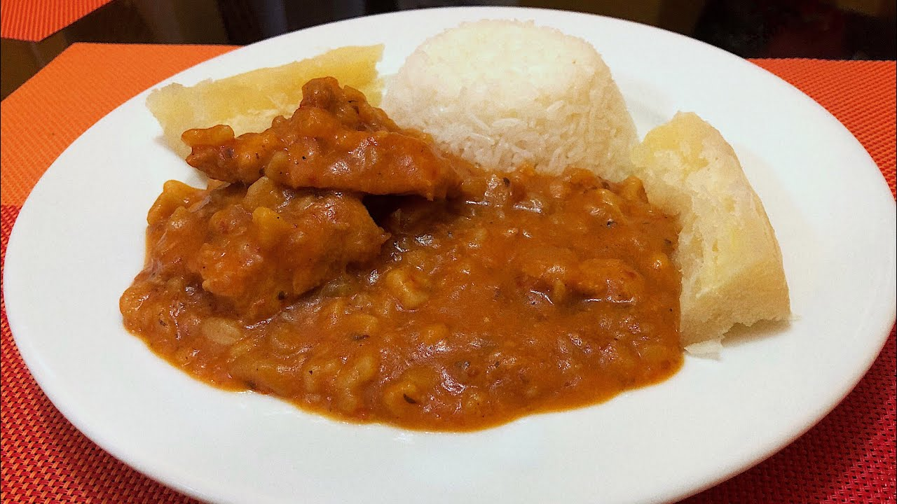
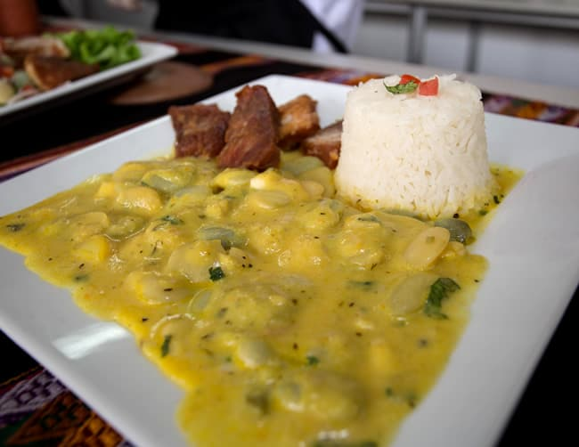
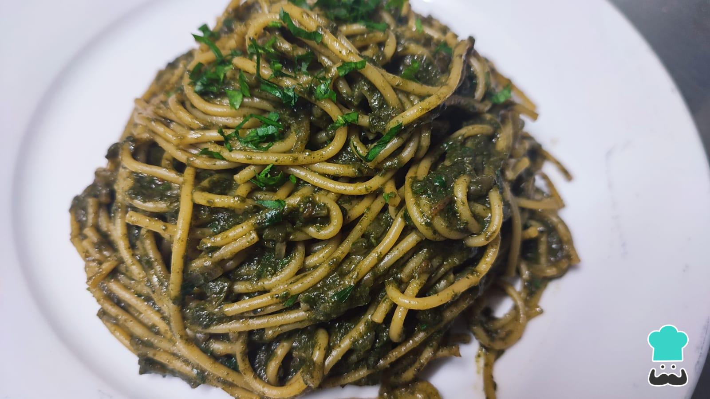
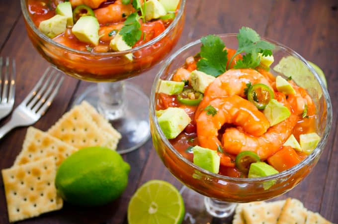
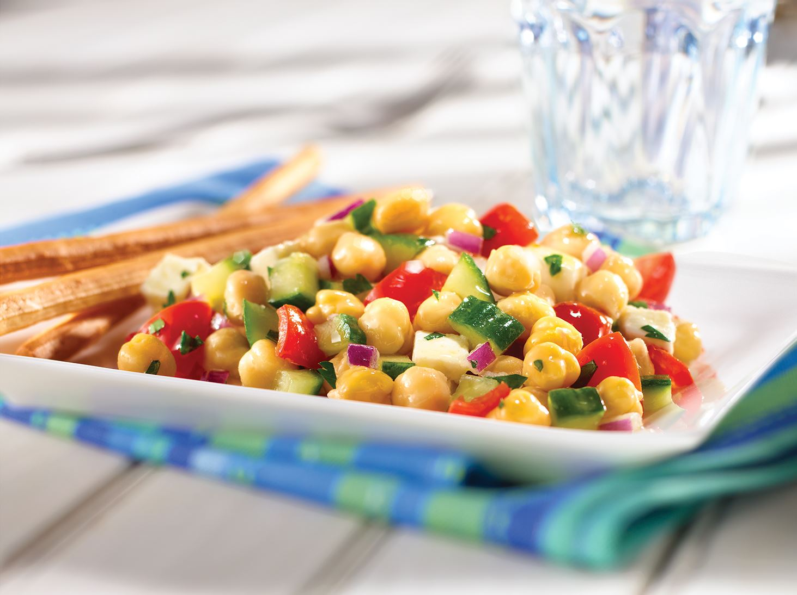
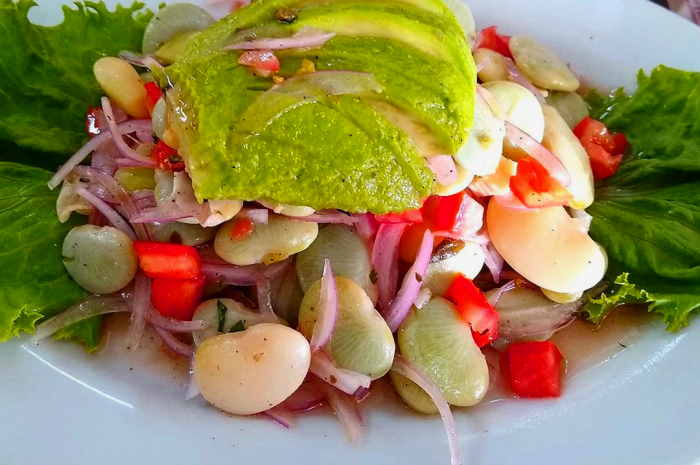
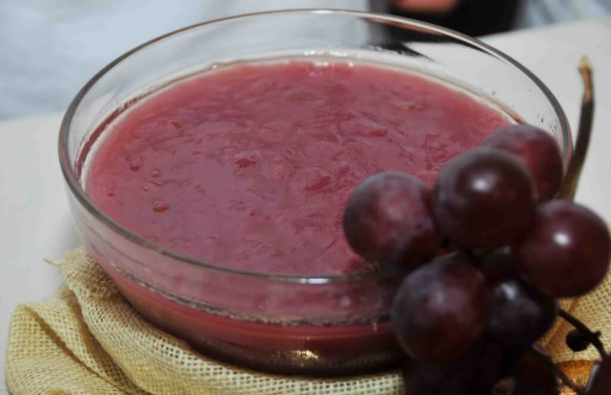
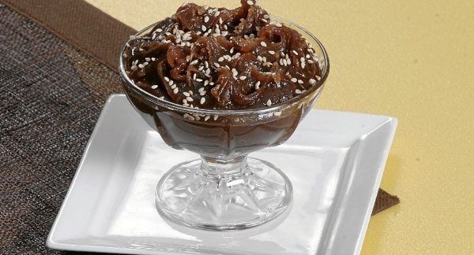
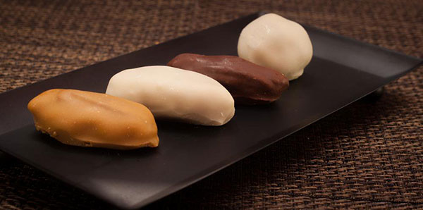
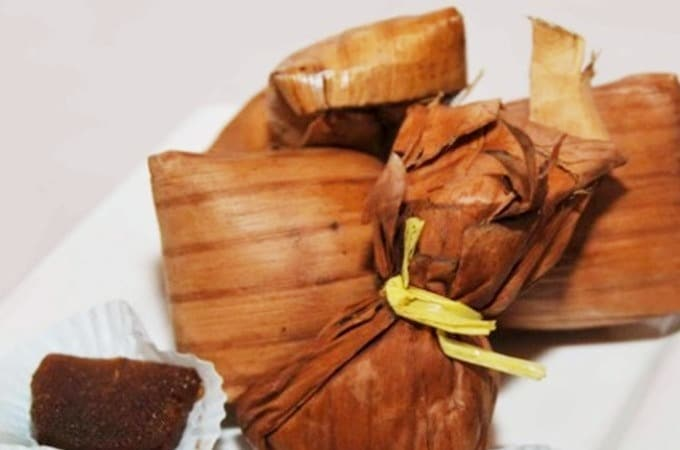

Gastronomia
Carapulcra
La Carapulcra es un plato típico de Ica muy conocido en el Perú. Sus raíces remotan desde la mezcla de culturas indígenas y afroperuanas, y es uno de los más antiguos de este país. Su preparación está a base de papa seca sancochada y guisada con carnes de chancho y gallina, ají panca y mirasol, ajos, entre otros ingredientes.
Chupe de Pallares Verdes
Este es un plato típico de Ica. Tiene un excelente sabor y valor nutricional, pues es hecho a base de pallares remojados cocidos en queso y leche, acompañados de un aderezo de cebollas. Puedes prepararlo en tu hogar y disfrutarlo en familia y amigos.
Sopa Seca
La Sopa Seca es un plato típico de Ica hecho con ají colorado y cebolla. Tiene fideos largos o spagueti, y su origen remota desde las últimas décadas del siglo XIX, cuando los italianos migraron a Perú, específicamente en Chincha.
Cóctel de Camarones
Este plato típico de Ica es frío y servido como entrada en muchos restaurantes. Está preparado con gambas o camarones hervidos, además de estar acompañado con jugo de limón, verduras, lechugas, aguacate o tomate.
Ensalada de garbanzos
Este plato típico de Ica es servido en varios restaurantes de la ciudad. Está hecha de garbanzos cocidos con cebollas limón y rocoto, además de sal y pimienta al gusto.
Ensalada de Palladares
En la gastronomía iqueña se encuentra la Ensalada de Palladares. Su ingrediente estrella de este plato típico es el pallar, quien representa la esencia de la cultura viva de esta ciudad, la cual nació desde tiempos inmemoriales y es considerado del patrimonio de la historia de Ica.
Mazamorra de Uva
Este postre típico de Ica es reconocido a nivel mundial. Su preparación está hecha a base de clavo de olor, canela y uvas trituradas, con harina disuelta. Tiene un color muy parecido al de la Mazamorra Morada, pero su sabor es distinto.
Frejol Colado
El Frejol Colado es un dulce típico de la gastronomía del Perú, específicamente en Cañete o Ica. Está hecho a base de canela, clavo de olor y frejol licuado, mezclado con azúcar y leche evaporada.
Tejas
La Teja es un dulce típico de la ciudad de Ica, y es un trozo de fruta o frutos secos como pecanas, rellenadas de manjar blanco y cubiertas de capa de fondant. Es un derivado de la chocoteja y muy consumido en esta ciudad del Perú.
Chapanas
Este plato típico de Ica es muy consumido en la costa del Perú, especialmente en Chincha. Es de origen afroperuano y es cocinado a base de yuca y chancaca, envuelto de hojas de plátano y hecho a vapor.
